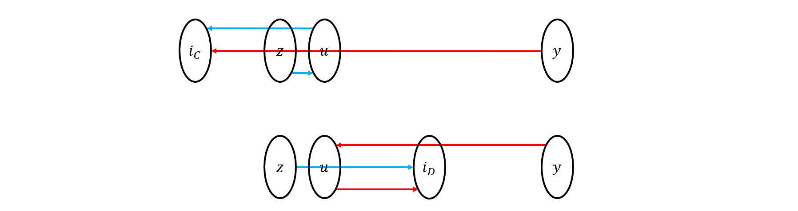

UOJ 题解
#1. A+B Problem
题目大意：
给定两个数 $a,b$，求它们的和。
$0\leq a,b\leq 10^9$
题解：
直接将两个数相加。
时间复杂度：$O(1)$
https://uoj.ac/submission/582484
1 |
|
#2. 【NOI2014】起床困难综合症
题目大意：
有 $n$ 个操作和一个变量 $x$，每个操作形如令 $x\leftarrow x\operatorname{op}_i a_i$，其中 $\operatorname{op}_i$ 可能是 $\operatorname{and},\operatorname{or},\operatorname{xor}$ 中的一个。$x$ 的初始值 $x_0$ 可以在 $[0,m]$ 中任选，求依次经过所有操作后 $x$ 的最大可能值。
$2\leq n\leq 10^5, 0\leq a_i,m<2^{30}$
题解：
先单独算一下 $x_0=m$ 的情况，然后考虑 $x_0<m$ 的情况：
枚举 $x_0$ 和 $m$ 不同的最高位，一定是 $m$ 这一位为 $1$ 而 $x_0$ 这一位为 $0$，在这之前的所有位 $x_0$ 都和 $m$ 相同，而这之后的所有位 $x_0$ 都可以任取。
注意到操作关于每一位是独立的，所以对于后面任取的那些位可以直接算出来每一位的最大值并加起来，对于前面的位只要算一下 $x_0=m\oplus 2^i$ 的情形即可，$i$ 是当前考虑的位。
时间复杂度：$O(n\log m)$
https://uoj.ac/submission/582485
1 |
|
#3. 【NOI2014】魔法森林
题目大意：
给定一张 $n$ 个点 $m$ 条边的无向图，每条边 $e$ 有两种权值 $a_e,b_e$，对于所有 $1\to n$ 的路径 $P$，求 $\max_{e\in P}\{a_e\}+\max_{e\in P}\{b_e\}$ 的最小值，或报告无解。
$2\leq n\leq 50000, 0\leq m\leq 10^5, 1\leq a_e,b_e\leq 50000$
题解：
将所有边按照 $a_e$ 从小到大排序，一条一条加入图中。用 LCT 动态维护这个图以 $b_e$ 为权值的 MST，每个时刻查询 $1\to n$ 的树链最大值就得到了对于每种 $\max a_e$ 的最小的 $\max b_e$，取个 $\min$ 就是答案。
时间复杂度：$O(m\log m)$
https://uoj.ac/submission/582530
1 |
|
#4. 【NOI2014】消除游戏
题目大意：
这是一道提交答案题。
给定 $n\times m$ 网格，网格中的数都是 $[0,9]$ 的整数。
每轮操作中，你可以选择一条简单路径，满足路径上每个格子都有数，且起始点的数不为 $0$。设你的路径长度为 $l$，路径上的数顺次构成一个整数 $X$：
- 如果 $X$ 是素数，则你的素数加分为 $l^{c_1}$，否则素数加分为 $1$；
- 如果 $X$ 是回文数，则你的回文加分为 $l^{c_2}$，否则回文加分为 $1$。
这轮操作的总分是素数加分和回文加分的和。但是特别地，如果 $X$ 既不是素数又不是回文数，则这个操作非法。
每轮操作结束后，路径上的所有数会消失，然后网格中所有数按重力规则下落。
你最多可以进行 $K$ 轮上述操作，并且每次的路径长度 $l$ 需要满足 $l_{min}\leq l\leq l_{max}$。
此外有一个参数 $F$，如果 $F=0$，则你的总分等于每轮操作总分之和；如果 $F=1$，则再设 $d$ 是操作结束后网格中剩下的数的个数，你的总分等于每轮操作的总分之和除以 $2^d$ 下取整。你要构造一个方案使得总分足够大（有一些不告诉你的评分参数）。
每个测试点给定 $n,m,K,l_{min},l_{max},c_1,c_2,F$ 和初始的网格。
题解：
测试点 1：
$n=m=5, K=100, l_{min}=2, l_{max}=16, c_1=c_2=2, F=1$，网格如下：
1 | 1 1 2 3 4 |
我们发现右上角 $4\times 4$ 的块正好可以构成一个长度为 $16$ 的回文数 $1234567887654321$，而左下这一条是一个素数 $10^8+7$。
于是分成这两部分，可以通过该测试点。
测试点 2：
$n=m=10, K=100, l_{min}=2, l_{max}=8, c_1=c_2=1, F=1$，网格如下：
1 | 7 4 1 3 5 9 8 6 1 6 |
我们发现由于 $F=1$，所以关键在于要把所有数消除光。
可以写个暴力 DFS：每次随机一个起点，然后随机一条从它开始的简单路径，然后检验是否合法，如果合法就删除后递归。如果某个 DFS 分支已经走不下去了就回溯，只要记下之前的地图就可以轻易地完成回溯操作。
这个做法搜出的解大概可以得到 $[7,9]$ 分。
我们可以加个优化：只使用长度 $\leq 4$ 的路径，因为长度越小能蹭到的分数 $1$ 就越多，所以这样总分会稍微大一些，可以通过该测试点。
1 |
|
测试点 3：
$n=m=100, K=500, l_{min}=2, l_{max}=18, c_1=2, c_2=0, F=0$，网格随机。
我们发现，想要得到最大的分数，只需要每次选出的都是一个 $18$ 位素数即可，由于素数密度是 $1/\ln n$ 级别，所以只要每次暴力随机一条路径，用 MR 判一下是不是素数就可以了，$500\times 18=9000$，比 $10000$ 小不少，可以轻松出解。
测试点 4：
$n=m=100, K=500, l_{min}=15, l_{max}=18, c_1=2, c_2=0, F=0$，网格随机。
同测试点 3，以下是这两个点的程序。
1 |
|
测试点 5：
$n=m=10, K=100, l_{min}=2, l_{max}=8, c_1=c_2=2, F=0$，网格如下：
1 | 9 0 4 4 4 0 1 0 0 9 |
和测试点 2 的区别是 $c=2$ 且 $F=0$，那么不用消完，但是需要尽可能消比较长的段，我们只需要在测试点 2 的爆搜中限制只搜长度等于 $8$ 的路径，就可以得到大概 $7$ 分到 $9$ 分。
搜出一个包含 $12$ 条长度为 $8$ 的路径的解，这时还剩 $4$ 个元素，如果运气好的话（多试几次）还能再找到一条长度为 $3$ 或者 $4$ 的路径，手动把它加上，就可以通过了。
测试点 6：
$n=m=1000, K=1, l_{min}=2, l_{max}=1000, c_1=0, c_2=1, F=0$，网格只包含 $1,2$，随机生成。
翻译一下，其实就是找到一条长度不超过 $1000$ 的尽量长的回文简单路径。
那么暴搜即可，每次随机一个中心，然后往两边扩展，很容易找到长度恰好为 $1000$ 的回文路径。
测试点 7：
$n=m=1000, K=1, l_{min}=2, l_{max}=1000, c_1=0, c_2=1, F=0$，网格只包含 $2,3,4$，随机生成。
同测试点 6，以下是这两个点的程序。
1 |
|
测试点 8：
$n=999, m=100, K=1, l_{min}=2, l_{max}=100000, c_1=0, c_2=1, F=0$，网格似乎很有规律。
这个点和 $6,7$ 不同的是我们需要找出的回文串非常长，不可能直接搜索，而是需要构造。
但是我们可以发现，网格几乎只由 $5,6$ 构成，并且如果 $i+j$ 是奇数那么 $(i,j)$ 上几乎都是 $6$；$i+j$ 是偶数那么 $(i,j)$ 上几乎都是 $5$，只有极少的反例（大概 $200$ 多个位置）。
我们称这些反例所在的位置是坏位置，其他位置是好位置。
那么如果一个长度为奇数的路径经过的都是好位置，则它是回文的，这点非常容易证明（它必是 $5,6$ 交替的一条路径），所以我们找到一个尽可能长的这种好路径即可。
我们可以两行两行构造，在相邻的两行中通过来回绕经过大部分格子，同时避开所有坏位置，如图中蓝色路径：

这做法看起来很好，但是有个 bug，就是如果两个坏位置把路给堵上了，就走不过去了。这时我们可以从旁边一行借个道，如图：

数据中只有 $3$ 个这样的情况，全都特判掉就行了（代码实现时因为一些原因，将行列互换了），最后构造出的长度是 $99475$。
1 |
|
测试点 9：
$n=129, m=128, K=5, l_{min}=2, l_{max}=20000, c_1=0, c_2=2, F=0$，网格似乎很有规律。
虽然 $K=5$，但是由于分数是根据平方计算，所以我们还是希望一条路径搞定，这样路径最长，分数最大。
用比较好的编辑器打开输入数据后可以观察到每行都几乎是回文的，于是我们可以发现，整个网格几乎关于中轴线对称，只有 $18$ 对位置例外。
那么和测试点 8 就差不多了，我们只考虑左半边，只要绕开这些不对称的坏位置，然后再把左半边的路径翻折到右半边，就一定是一条回文的路径了。
这个测试点由于坏位置很少，所以甚至不需要测试点 8 那样的特判，直接两行两行绕就可以了，最后构造出的长度是 $16440$。
1 |
|
测试点 10：
$n=3, m=999, K=10, l_{min}=2, l_{max}=2997, c_1=0, c_2=2, F=0$，网格似乎很有规律。
和测试点 9 一样，我们还是希望一条路径搞定，这里 $l_{max}=2997=n\times m$，所以最好是一条路径覆盖所有数。
继续观察网格规律，首先可以发现的是如果将每行三个数三个数划分，将每行看成 $333$ 个三元组构成的序列，则这个序列是回文的。
进一步观察，我们可以输出每个三元组的第一个数，发现每一行关于第一个数都是有周期的。
也就是说，整个网格有如下周期：
1 | 1 2 1 2 3 2 3 4 3 4 5 4 5 6 5 4 5 4 3 4 3 2 3 2 1 2 1 |
观察每行每个三元组的第一个数，第一行是 1 2 3 4 5 4 3 2 1，第二行是 4 5 6 7 8 7 6 5 4，第三行是 5 6 7 8 9 8 7 6 5，有很强的对称性，于是我们尝试对于这个周期解决子问题。
通过尝试或者暴搜，我们发现有一组规律性很强的解，它的前 $9$ 项就是 1 2 3 4 5 4 3 2 1，你能找到吗？
没错！它就藏在第一个 $3\times 3$ 块中：

于是我们发现只要将每个 $3\times 3$ 块都像这样连起来，再把所有块串一起，就是一组合法的解。
1 |
|
#5. 【NOI2014】动物园
题目大意：
给定一个长度为 $n$ 的字符集为小写字母的字符串 $w$，对于 $w$ 的每个前缀 $w[1,i]$，求出其长度不超过 $\lfloor\frac{i}{2}\rfloor$ 的非空 Border 数量，答案记为 $x_i$，只需要输出 $\prod (x_i+1)\bmod (10^9+7)$。
本题单个测试数据包含 $T$ 组数据。
$1\leq T\leq 5, 1\leq n\leq 10^6$
题解：
在运行 KMP 算法时，除了求 Fail 数组外顺便求一个 $g_i$ 表示 $w[1,i]$ 的最长的长度不超过一半的 Border，$x_i$ 可以由 $g_i$ 在 Fail 树上的深度求出。$g_i$ 的求法与 Fail 数组几乎完全相同。
时间复杂度：$O(n)$
https://uoj.ac/submission/582554
1 |
|
#6. 【NOI2014】随机数生成器
题目大意：
给定 $x_0,a,b,c,d$，令 $x_i=(ax_{i-1}^2+bx_{i-1}+c)\bmod d (i\ge 1)$。
有一个 $n\times m$ 网格。首先生成一个长度为 $n\times m$ 的序列 $T$，初始时 $T_i=i$，然后对于 $i=1,\ldots,n\times m$ 依次进行如下操作：交换 $T_i$ 和 $T_{x_i\bmod i}+1$，接下来再额外进行 $q$ 次交换 $T$ 中两个数的操作（在输入中给出），最后将 $T_1,\ldots,T_{n\times m}$ 按照从上到下，从左到右的顺序填入网格中。
你需要找一条从网格左上角到右下角的路径，每一步只能往右或往下走一格，且经过的所有格子上的数从小到大排序后形成的序列字典序最小。你只需要输出这个排序后形成的序列。
$2\leq n,m\leq 5000, 0\leq q\leq 50000, 0\leq a\leq 300, 0\leq b,c\leq 10^8, 0\leq x_0<d\leq 10^8$
题解：
首先模拟出网格中的每个数。
然后按照格子里的数从小到大贪心，每一次要检查当前考虑的数 $x$ 能否被加到路径中。考虑一条路径 $S$，如果将其中的格子 $(i,j)$ 按照 $i+j$ 从小到大排序，那么 $i,j$ 分别是单调不降的，显然这也是一个格子集合能出现在同一条路径上的充分条件，所以我们以 $i+j$ 为下标，用一个 set 维护已经确定在路径中的格子，设 $x$ 的位置为 $(i_x,j_x)$，只要检查 $i_x+j_x$ 在 set 中的前驱后继和 $(i_x,j_x)$ 是否满足上述单调关系即可。如果满足，则将 $x$ 也加入路径中。
时间复杂度：$O(q+nm\log (n+m))$
https://uoj.ac/submission/582737
1 |
|
#7. 【NOI2014】购票
题目大意：
给定一棵 $n$ 个点的以 $1$ 为根的有根树，每条边有长度 $s_i$，每个点有三个参数 $l_i,p_i,q_i$。从 $x$ 出发通过一步可以到达 $x$ 的一个祖先 $y$，设它们的距离为 $S$，则要求 $S\leq l_i$，且这一步的代价为 $S\times p_i+q_i$。对于每个点 $x$ 求出从它出发走若干步走到根的最小代价和，保证有解，保证每个点到根的距离不超过 $2\times 10^{11}$。
$1\leq n\leq 2\times 10^5, 0\leq p_i\leq 10^6, 0\leq q_i\leq 10^{12}, 0<l_i\leq 2\times 10^{11}$
题解：
设答案为 $dp_x$，那么 $dp_x=\min_y(dp_y+(dep_x-dep_y)\times p_x+q_x)$，其中 $y$ 可以取 $x$ 的某一段深度较大的祖先。
这是可斜率优化的形式，将 $y$ 的状态看成一次函数 $f(t)=dp_y-dep_y\times t$，于是可以考虑用李超树维护所有 $y$。但是由于是一段树链，所以若使用树链剖分加线段树套李超树的话，时间复杂度将达到 $\log^3(*)$。
有一种方式可以避免这个问题，我们对树进行一次 DFS 并记录下每个点回溯的顺序，称为出栈序，记为 $o_x$。然后按照 DFS 序从小到大枚举每个点，枚举到某个点 $x$ 时设其一个祖先是 $y$，则出栈序在 $[o_x,o_y]$ 中的已经访问过的点就恰好是 $x\to y$ 这条路径上的所有点，这就可以避免树剖，转化为单纯的区间问题，线段树套李超树解决。其实这可以看作是一类 DFS 序应用的扩展。
时间复杂度：$O(n\log n\log P)$
https://uoj.ac/submission/582740
1 |
|
#8. Quine
题目大意：
写一个程序，输出它自己的源代码，且源代码至少包含 $10$ 个可见字符。
题解：
首先考虑这题的困难之处在哪里：如果我们需要输出一些东西，那么就需要把它写在输出语句里，当我们想要输出源代码本身时，这样就会无限嵌套。解决方法也很简单，我们用一个字符串记录要输出的内容，然后将它输出两遍，就不会无限嵌套了。
但是现在新的问题是，源代码中有双引号、换行符等特殊字符，如果将字面量写在字符串中将不能正确编译。这个问题的解决方法也很简单，我们用反斜杠转义先预处理出双引号、反斜杠、换行符等特殊字符，然后在需要输出这些字符时输出预处理的字符串即可。
时间复杂度：$O(1)$
https://uoj.ac/submission/582818
1 |
|
#9. 【UTR #1】vfk的数据
题目大意：
给定 $n$ 个同一道题的输入文件名 $S_1,\ldots,S_n$，将它们按照测试点编号从小到大排序。文件名的格式为 题目名 + 测试点编号 + .in。
$1\leq n\leq 10000, 4\leq |S_i|\leq 100$
题解：
容易发现长度长的串一定编号更大，而长度一样的串直接比较字典序即可。
时间复杂度：$O(\sum |S_i|\log |S|)$
https://uoj.ac/submission/582821
1 |
|
#10. 【UTR #1】pyx的难题
题目大意：
有 $n$ 个任务，第 $i$ 个任务开始时间为 $t_i$，需要花 $s_i$ 单位时间完成，优先级为 $p_i$。所有任务的优先级是两两不同的正整数。有一个人在做任务。他做任务的方法是每单位时间都找到目前已经开始，且尚未完成的任务中，优先级最高的，在这一单位时间内做这个任务。如果没有已经开始且尚未完成的任务，那么这一单位时间闲置。
现在有恰好一个任务的优先级 $p_i$ 丢失了，但是知道这个任务恰好在 $T$ 时刻被完成。求一种可能的 $p_i$，并求此时每个任务完成的时间，保证有解。
$1\leq n\leq 3\times 10^5, 0\leq t_i\leq 10^9, 1\leq s_i,p_i\leq 10^9, 1\leq T\leq 10^{15}$
题解：
设优先级丢失的任务是任务 $n$。首先我们假设这个任务不存在，模拟一遍做其他任务的过程（可以用优先队列模拟），然后考虑时间段 $[t_n,T]$，这个时间段是可能用来做任务 $n$ 的。
设 $T_0$ 是这个时间段中的闲置时间，$T_i$ 是这个时间段中用来做任务 $i$ 的时间，则加入任务 $n$ 会使得这个时间段做内所有优先级比它低的任务的时间转移成做任务 $n$，所以我们要求：
按照 $p_i$ 从小到大对任务排序后枚举每个前缀，检验上述条件是否满足即可。求出 $p_n$ 之后再模拟一遍即可得到每个任务的完成时间。
时间复杂度：$O(n\log n)$
https://uoj.ac/submission/582827
1 |
|
#11. 【UTR #1】ydc的大树
题目大意：
给定一棵 $n$ 个结点的无根树，边有长度 $l_i$。其中有 $m$ 个点是黑的，其余点是白的。如果删去一个白点 $x$ 会导致黑点 $y$ 与任何一个原先离 $y$ 距离最大的黑点都无法连通，则称 $x$ 支配 $y$。被白点 $x$ 支配的点数记为 $f(x)$，求 $\max_x\{f(x)\}$ 和取到最大值的 $x$ 的数量。
$1\leq n\leq 10^5, 1\leq l_i\leq 1000$
题解：
求出黑点的直径中点，记为 $r$，如果直径中点在某条边中间则任意取一个端点。
$r$ 的各个子树的最大深度分别记为 $d_1\ge \ldots \ge d_k$。考虑 $x$ 支配 $y$ 的条件，以 $r$ 为根时：
- 若 $y$ 在 $x$ 子树内，则 $x$ 一定支配 $y$，因为离 $y$ 最远的黑点一定不会和 $y$ 在直径中心的同一侧。
- 若 $y$ 不在 $x$ 子树内，则 $x$ 支配 $y$ 当且仅当离 $y$ 最远的黑点全在 $x$ 子树内。
考虑第二类情况如何统计。如果 $d_1=d_2$，则：
- 若 $d_1=d_3$，则第二类情况不存在，因为 $d_1,d_2,d_3$ 对应的子树总有一个是和 $y$ 所在子树不同且没有被 $x$ 封住的，这个子树内的最深黑点是离 $y$ 最远的黑点；
- 若 $d_1\ne d_3$，则第二类情况会发生当且仅当 $y$ 在 $d_1$ 对应的子树里，且 $x$ 子树里包含了所有 $d_2$ 对应子树中的最深点，或反之。
如果 $d_1\ne d_2$，则：
- 若 $x$ 的子树里包含了所有 $d_1$ 对应子树中的最深点，那么所有不在 $x$ 子树里的黑点都被 $x$ 支配（事实上所有黑点都被 $x$ 支配）；
- 若 $d_2\ne d_3$，则当 $x$ 的子树里包含了所有 $d_2$ 对应子树中的最深点且 $y$ 在 $d_1$ 对应子树中时，$x$ 支配 $y$。
分别统计以上情况即可。
时间复杂度：$O(n)$
https://uoj.ac/submission/582898
1 |
|
#12. 【UER #1】猜数
题目大意：
给定两个数 $g,l$，已知 $g\times l$ 是完全平方数。有两个数 $a,b$ 满足 $a\times b=g\times l$ 且 $g\mid a, g\mid b$，求 $a+b$ 的最小值和最大值。
本题单个测试点包含 $T$ 组数据。
$1\leq T\leq 5, 1\leq g,l\leq 10^{18}$
题解：
根据基本的数学知识，可以知道 $a+b$ 的最小值是 $2\sqrt{gl}$，最大值是 $g+l$，但是 $gl$ 会爆 long long，所以可以用 $2g\sqrt{\frac{l}{g}}$ 来计算。
时间复杂度：$O(\log l)$
https://uoj.ac/submission/582900
1 |
|
#13. 【UER #1】跳蚤OS
题目大意：
维护一个文件系统，地址以 Linux 风格表示，/ 为根目录。首先进行 $n$ 次操作，每次给定两个地址 $s,t$，然后建立一个 $s$ 指向 $t$ 的快捷方式，即每当访问 $s$ 时都会来到 $t$，若 $t$ 也是快捷方式则 $s$ 指向 $t$ 指向的实际位置。
接下来进行 $m$ 次查询，每次给定地址 $s$，求 $s$ 指向的实际位置。
$1\leq n\leq 20000, 1\leq m\leq 10, \sum|s|+\sum|t|\leq 5\times 10^5$
题解：
用一个 Trie 维护文件结构，对于 Trie 上的结点 $x$，记 $f(x)$ 表示 $x$ 指向的实际位置，想要访问一个地址时就沿 Trie 向下走，设当前位置为 $cur$，每走一层目录就令 $cur\leftarrow f(cur)$，最后就到达了地址指向的实际位置。然后暴力实现修改和查询即可。
时间复杂度：$O(\sum|s|+\sum|t|)$
https://uoj.ac/submission/582901
1 |
|
#14. 【UER #1】DZY Loves Graph
题目大意：
维护一张 $n$ 个点的无向图，初始没有边，支持 $m$ 次操作，操作分为三种：
- 操作一：给定 $a,b$，设当前是第 $i$ 次操作，在 $a,b$ 间连一条边权为 $i$ 的边；
- 操作二：给定 $k$，删除当前边权最大的 $k$ 条边，保证至少存在 $k$ 条边；
- 操作三：撤回上一次操作，保证上一次操作不是撤回操作。
每次操作后，需要输出当前图的最小生成树边权和，或报告不存在生成树。
$1\leq n\leq 3\times 10^5, 1\leq m\leq 5\times 10^5$
题解：
如果没有操作二，由于加入边的边权递增，所以只要用并查集维护连通性即可。
有操作二的情况下，设 $f_i$ 表示当前图仅考虑边权前 $i$ 小（即加入时间前 $i$ 小）的边时，MST 的权值和。设当前图中边数为 $e$，对于操作一，直接加一条边并更新 $f_{e+1}$ 即可；对于操作二，暴力删掉最后 $k$ 条加入的边，退回到 $e-k$ 条边时的状态即可。
但是这样做的复杂度是依赖势能的，如果有操作三就会变劣。所以我们要判断，如果某个操作二的下一个操作是操作三，那么就不暴力删除最后 $k$ 条边，只是当前输出 $f_{e-k}$ 作为答案；否则这个操作是确实会被执行的，暴力删除最后 $k$ 条边就可以通过势能分析出复杂度是对的。
由于并查集需要撤回，所以只能使用按秩合并。
时间复杂度：$O(m\log n)$
https://uoj.ac/submission/582901
1 |
|
#15. 【NOIP2014】生活大爆炸版石头剪刀布
题目大意：
生活大爆炸版石头剪刀布中有五种手势，它们的输赢关系如下：
两个人 A,B 在玩生活大爆炸版石头剪刀布，共进行了 $n$ 轮，给定两个长度分别为 $n_a,n_b$ 的手势序列 $S_{0\cdots n_a-1},T_{0\cdots n_b-1}$，在第 $i+1$ 轮 A 会出 $S_{i\bmod n_a}$，而 B 会出 $T_{i\bmod n_b}$，每次赢的人得一分，平局则都不得分。求两人最终分别的得分。
$1\leq n,n_a,n_b\leq 200$
题解：
模拟即可。
时间复杂度：$O(n)$
https://uoj.ac/submission/582901
1 |
|
#16. 【NOIP2014】联合权值
题目大意：
给定一张 $n$ 个点的树，点有权值 $w_i$。如果有序点对 $(u,v)$ 满足 $u,v$ 间的距离为 $2$，则它们会有联合权值 $w_u\times w_v$。求所有联合权值的最大值和总和，其中总和对 $10007$ 取模。
$1\leq n\leq 2\times 10^5, 1\leq w_i\leq 10000$
题解：
任取一个点为根，距离为 $2$ 的点对要么是兄弟，要么是 $u$ 和 $u$ 的父亲的父亲。后者只需枚举 $u$ 很容易统计，前者只需在每个点 $u$ 处统计其儿子间的所有贡献即可。
时间复杂度：$O(n)$
https://uoj.ac/submission/582909
1 |
|
#17. 【NOIP2014】飞扬的小鸟
题目大意：
有一个长度为 $n$，高度为 $m-1$ 的地图，可以看作直角坐标系中的 $[0,n]\times [1,m]$，有 $k$ 个管道，每个管道有三个参数 $p,l,h$，表示它占据了 $[p,p]\times ([1,l]\cup [h,m])$，保证 $p$ 互不相同。
有一个小鸟从 $(0,x)$ 出发（其中 $x$ 是你可以任选的一个数），第 $i$ 秒内，设小鸟原先位置为 $(i-1,y)$，你可以选择点击屏幕，此时小鸟会来到 $(i,\min(m,y+X_i))$；或者不点击屏幕，此时小鸟会来到 $(i,y-Y_i)$，其中 $X_i,Y_i$ 是给定的参数。小鸟超出地图或碰到管道即为失败。
求小鸟能否在 $n$ 秒内不失败，如果能则求出最少需要点击屏幕的次数，否则输出最多能通过几个管道（到达一个横坐标大于 $p$ 的位置即为通过横坐标为 $p$ 的管道）。
$5\leq n\leq 10000, 5\leq m\leq 1000, 0\leq k<n, 1\leq p\leq n-1$
题解：
每秒钟可以看作从 $+X_i$ 或 $-Y_i$ 中选择一个的背包。记 $dp(i,j)$ 表示到达 $(i,j)$ 所需的最小点击次数，选择 $+X_i$ 即需要多一次点击次数，并且注意点击后纵坐标要和 $m$ 取 $\min$。每经过一个管道，只需把管道堵住的位置的 DP 值设为无穷大即可认为不能通过管道。
可以用滚动数组优化空间。
时间复杂度：$O(nm)$
https://uoj.ac/submission/582917
1 |
|
#18. 【NOIP2014】无线网络发射器选址
题目大意：
有一个 $129\times 129$ 的网格，行列分别编号为 $0,\ldots,128$。给定参数 $d$，在 $(x,y)$ 处设置无线网络发射器可以覆盖到所有满足 $\max(|x-x’|,|y-y’|)\leq d$ 的格子 $(x’,y’)$。有 $n$ 个给定位置的公共场所，每个公共场所有权值 $w_i$。求一个发射器能覆盖到的公共场所权值和的最大值，以及有几种取到最大值的发射器位置。
$1\leq d,n\leq 20, 1\leq w_i\leq 10^6$
题解：
暴力枚举发射器位置，再暴力计算能覆盖的位置的公共场所权值和即可。
时间复杂度：$O(n+M^2d^2)$（其中 $M=129$ 为坐标范围）
https://uoj.ac/submission/582911
1 |
|
#19. 【NOIP2014】寻找道路
题目大意：
给定 $n$ 个点 $m$ 条边的有向（无权）图 $G$ 和两个点 $s,t$。如果一个点的出边指向的所有点都可达 $t$ 则称其为好点。求一条 $s$ 到 $t$ 的最短路径，满足路径上除了 $t$ 外都是好点。只需要输出路径长度，或报告无解。
$2\leq n\leq 10000, 1\leq m\leq 2\times 10^5, s\ne t$
题解：
首先从 $t$ 出发在反图 $G’$ 上搜索即可得到所有可达 $t$ 的点。再标记所有不可达 $t$ 的点在反图 $G’$ 上的出边指向的点，则没有被标记的就是好点。
把不是好点且不是 $t$ 的点都删掉，再求一下 $s$ 到 $t$ 的最短路即可。
时间复杂度：$O(n+m)$
https://uoj.ac/submission/582916
1 |
|
#20. 【NOIP2014】解方程
题目大意：
求下述方程在 $[1,m]$ 中的所有整数解：
$1\leq n\leq 100, 1\leq m\leq 10^6, 0\leq |a_i|\leq 10^{10000}, a_n\ne 0$
题解：
选大质数 $p$，当 $\sum_{i=0}^n a_ix^i\equiv 0\bmod p$ 时，我们就认为 $x$ 是方程的根，而这是容易判断的。若认为多项式的值模 $p$ 关于 $x$ 随机分布，则 $x$ 不是方程的根而被我们误判的概率为 $\frac{1}{p}$，因此完全判断正确的概率是 $1-\frac{m-s}{p}+o(\frac{1}{p})$，其中 $s$ 是解的数量，多取几个不同的 $p$，则正确率将足够高。
时间复杂度：$O(nm)$
https://uoj.ac/submission/582914
1 |
|
#21. 【UR #1】缩进优化
题目大意：
给定一个长度为 $n$ 的序列 $a_1,\ldots,a_n$，你可以选择一个任意的正整数 $x$，求下式的最小值：
$1\leq n\leq 10^6, 1\leq a_i\leq 10^6$
题解：
将取模按定义展开：
其中第一项是定值。第二项则考虑枚举 $x$，分别对每个 $j$ 求 $[x\times j,x\times (j+1)-1]$ 中 $a_i$ 的个数，这就是满足 $\left\lfloor\frac{a_i}{x}\right\rfloor=j$ 的 $a_i$ 的个数，于是不难计算。
时间复杂度：$O(n+A\log A)$
https://uoj.ac/submission/582921
1 |
|
#22. 【UR #1】外星人
题目大意：
给定 $n$ 个数 $a_1,\ldots,a_n$，你可以将它们任意排列形成序列 $b_1,\ldots,b_n$，共有 $n!$ 种排列方案。另外给定一个 $x$，定义序列 $b$ 的价值为：
求所有可能的 $b$ 的最大价值以及使得 $b$ 达到最大价值的排列方案数。
$1\leq n\leq 1000, 1\leq x,a_i\leq 5000$
题解：
将 $a_i$ 从大到小排序。设 $b_i=a_{p_i}$，则我们可以仅考虑排列 $p$ 的所有前缀最大值位置，只有这些位置对应的 $b_i$ 真正对答案产生影响。因为如果某个 $p_i$ 之前存在一个 $p_j>p_i$，那么说明 $x$ 先模了一个比 $b_i$ 更小的数，再模 $b_i$ 肯定是没有作用的。
因此最大价值的计算方法就很简单：选出一个 $a_1,\ldots,a_n$ 的包含 $a_n$ 的子序列（因为 $n$ 肯定是 $p$ 的前缀最大值）并令 $x$ 依次模这个子序列中的数，这是一个有序的问题，令 $f(i,j)$ 表示考虑 $a_1,\ldots,a_i$ 后 $x$ 是否可能变成 $j$，DP 一下即可计算。
再考虑方案数，我们考虑如下问题：假设排列 $p$ 的前缀最大值集合已经固定，如何计数 $p$。按值从大到小考虑，依次枚举 $i=n,\ldots,1$：
- 如果 $i$ 在前缀最大值中，那么它暂时只能放在当前的 $p$ 的开头。
- 否则，$i$ 可以放在当前 $p$ 的开头外的任意一个位置，所以有 $n-i$ 种方案。
也就是说，若前缀最大值集合为 $S$，则 $p$ 的数量为 $\prod_{i\notin S}(n-i)$，也就是贡献可以拆到每个位置上，于是执行一个和计算 $f$ 差不多的 DP 即可求出方案数。
时间复杂度：$O(nA)$
https://uoj.ac/submission/582925
1 |
|
#23. 【UR #1】跳蚤国王下江南
题目大意：
给定一株 $n$ 个点的仙人掌 $C$，对于每个 $i=0,\ldots,n-1$ 求出从点 $1$ 出发经过恰好 $i$ 条边的简单路径数量。
$1\leq n\leq 10^5$
题解：
暂无。
#24. 【IOI2014】Rail
题目大意：
这是一道交互题。
有一个直线形的铁路，上面分为 $m$ 段，按照在铁路上的顺序依次编号为 $1,\ldots,m$。有两条轨道：A 轨道的方向从 $1$ 到 $m$；B 轨道的方向从 $m$ 到 $1$。每个段有三种类型：空类型表示这一段上没有车站；C 类型表示有一个车站，且只能从 B 轨道进入车站，离开车站将进入 A 轨道；D 类型表示有一个车站，且只能从 A 轨道进入车站，离开车站将进入 B 轨道。
对于两个车站 $i,j$，定义 $i$ 到 $j$ 的距离 $dis(i,j)$ 为从 $i$ 出发沿轨道走到 $j$，需要跨越段的最少次数（从一段到另一段记为一次跨越）。
现在不知道 $m$ 的值（但保证 $m\leq 10^6$），也不知道每个段的类型。你只知道总共有 $n$ 个车站，依次编号为 $0,\ldots,n-1$，且 $0$ 号车站的位置是已知的 $loc$，段 $loc$ 的类型为 C。你可以进行若干次询问，每次给定 $i,j$ 询问 $i$ 号车站到 $j$ 号车站的距离，你需要使用不超过 $3\times (n-1)$ 次询问给出所有车站的位置和对应段的类型。
$1\leq n\leq 1000, 1\leq x,a_i\leq 5000$
题解：
首先问出 $0$ 号车站到其余所有车站的距离，设到 $y$ 号车站的距离是最短的。那么显然 $y$ 号车站的位置为 $loc+dis(0,y)$，类型（即对应段的类型，简称为车站的类型）为 D。
现在我们再问出 $y$ 到所有车站的距离。对于任意不同于 $0,y$ 的车站 $i$，如果 $dis(0,i)=dis(0,y)+dis(y,i)$，则 $i$ 在 $y$ 的左边；否则 $i$ 在 $y$ 的右边。对于左边和右边的车站分别处理，处理方式是类似的，我们以左边为例。
将所有左边的车站按照 $y$ 到它的距离从小到大排序，依次确定位置和类型。假设当前考虑到了车站 $i$，上一个 C 类型车站为 $z$（即满足 $dis(y,z)<dis(y,i)$ 且 $dis(y,z)$ 最大的那个 C 类型车站 $z$）。为了确定 $i$ 的类型，我们询问 $dis(z,i)$，当 $dis(y,i)$ 和 $dis(z,i)$ 都固定时，$i$ 就仅剩两种可能的位置和对应的类型了，如下图所示：

- 若 $i$ 是 $C$ 类型的，则其位置为 $p(i_C)=p(y)-dis(y,i)$，从 $z$ 走到 $i$ 需要经过一个 D 类型车站 $u$ 转向；
- 若 $i$ 是 $D$ 类型的，则其位置为 $p(i_D)=p(z)+dis(z,i)$，从 $y$ 走到 $i$ 需要经过一个 C 类型车站 $u$ 转向。
巧妙之处在于，通过计算可以发现，上述两种情况的 $u$ 的位置是相同的，所以我们只需检查这个位置上究竟是一个 C 类型车站还是一个 D 类型车站，就可以知道 $i$ 属于上述的哪种情况，从而确定它的位置和类型。
总共使用了 $3n-C$ 次操作，$C$ 是个固定的小常数。
时间复杂度：$O(n\log n)$
https://uoj.ac/submission/591632
1 |
|
#25. 【IOI2014】Wall
题目大意：
维护一个长度为 $n$ 的序列 $a_0,\ldots,a_{n-1}$，初始全零。接下来进行 $k$ 次操作：
- 操作一：给定 $l,r,v$，将 $a_l,\ldots,a_r$ 全部和 $v$ 取 $\max$；
- 操作二：给定 $l,r,v$，将 $a_l,\ldots,a_r$ 全部和 $v$ 取 $\min$。
求最终的序列。
$1\leq n\leq 2\times 10^6, 1\leq k\leq 5\times 10^5, 0\leq v\leq 10^5$
题解：
用一个二元组形式的操作 $(d,u)$ 表示将一个数对 $[d,u]$ 取整，即将小于 $d$ 的数变为 $d$，大于 $u$ 的数变为 $u$，于是题目中的操作都可以表示为给一个区间执行一个形如 $(d,u)$ 的操作（操作一即 $d=0$，操作二即 $u=+\infty$）。
我们发现两个操作的复合是可以计算的，具体地：
于是可以用线段树维护懒标记的方法维护区间操作，并支持最后求出整个序列。
时间复杂度：$O(n+k\log n)$（代码为 $O((n+k)\log n)$）
https://uoj.ac/submission/591633
1 |
|
#26. 【IOI2014】Game
题目大意：
这是一道交互题。
A 和 B 玩游戏，A 心里想一个 $n$ 个点的无向图 $G$，点的编号为 $0,\ldots,n-1$，B 要猜出它是否连通。B 每次可以问两个点 $u,v$ 之间是否有边。现在，交互库会扮演 B 提出询问，你需要扮演 A 回答每个询问，使得在第 $\frac{n(n-1)}{2}$ 次询问前，B 无法确定 $G$ 是否连通。
$4\leq n\leq 1500$
题解：
显然 $G$ 是个树是最优的，此时我们只要保证在第 $\frac{n(n-1)}{2}$ 次询问之前，当前已经确定的森林只有小于 $n-1$ 条边，即可保证 B 不能确定 $G$ 是否连通。
考虑将树变成有根树，以 $0$ 为根，每个点的父亲编号比自己小。只要有一个点的父亲还没确定（它和父亲的边还没被问过），就无法确定是否连通，所以当询问 $u,v (u<v)$ 时，只要 $u$ 不是最后一个没和 $v$ 问过的比 $v$ 编号小的点，我们都回答没有边；否则才回答有边。这样每个点只有拖到它和之前的点的所有边都问过才能知道是否连通，于是在第 $\frac{n(n-1)}{2}$ 次询问之前肯定还有一个点没确定，也就无法确定 $G$ 是否连通。
时间复杂度 $O(n^2)$
https://uoj.ac/submission/591636
1 |
|
#27. 【IOI2014】Gondola
题目大意：
称一个长度为 $n$ 的序列 $a_1,\ldots,a_n$ 是好的，当且仅当它可以通过以下方式得到：
- 初始时令 $a_i=(i+x)\bmod n+1$，其中 $x$ 是一个任选的整数；
- 接下来进行 $k$ 轮操作（$k$ 是一个任选的非负整数），第 $i$ 轮操作任选一个 $p_i$，然后令 $a_{p_i}\leftarrow n+k$。
本题分为三个部分，分别需要解决以下问题：
- 问题一：给定一个长度为 $n$ 的序列 $a_1,\ldots,a_n$，判断它是否是好的；
$1\leq n\leq 10^5, 1\leq a_i\leq 2.5\times 10^5$ - 问题二：给定一个长度为 $n$ 的好序列 $a_1,\ldots,a_n$，构造一种符合上面条件的操作序列生成它，也就是你要给出每一轮操作的 $p_i$；
$1\leq n\leq 10^5, 1\leq a_i\leq 2.5\times 10^5$ - 问题三：给定一个长度为 $n$ 的序列 $a_1,\ldots,a_n$，求有多少种符合上面条件的操作序列可以生成它，对 $10^9+9$ 取模。
$1\leq n\leq 10^5, 1\leq a_i\leq 10^9$
题解：
不难发现，只要存在一种 $1,\ldots,n$ 的循环表示可以和 $a_1,\ldots,a_n$ 中 $1,\ldots,n$ 这些数的出现位置完全对应，则是好序列。判断是容易的，如果 $a_1,\ldots,a_n$ 中没有出现 $1,\ldots,n$ 中任何一个数则一定是好序列，否则找到其中一个数的出现位置就确定了上述循环表示，对比一下即可。
构造生成序列也比较平凡，每次把任意一个不在最终的 $a_1,\ldots,a_n$ 中出现的数替换掉即可。
计数则考虑倒过来做，设最终序列 $a_1,\ldots,a_n$ 中出现过的大于 $n$ 的数从大到小排序为 $b_1,\ldots,b_t$，则 $(b_2,b_1]$ 中的数只有一个位置能放（即 $b_1$ 最后的位置），$(b_3,b_2]$ 中的数则有两个位置能发（最后 $b_1$ 或 $b_2$ 的位置），以此类推，$(b_i,b_{i-1}]$ 中的数就都有 $i-1$ 种选择，全部乘起来即为答案。
时间复杂度：$O(n)$（第一问）/$O(A)$（第二问）/$O(n\log A)$（第三问）
https://uoj.ac/submission/591699
1 |
|
#28. 【IOI2014】Friend
题目大意：
有一个图 $G$，初始只有一个点，编号为 $0$，接下来依次进行 $n-1$ 轮操作，第 $i$ 轮操作给定 $f_i,p_i$，其中 $f_i<i, p_i\in \{0,1,2\}$，表示新建一个编号为 $i$ 的点，而 $i$ 与之前的点的连边由以下方式确定：
- 若 $p_i=0$，则仅在 $i$ 和 $f_i$ 之间连一条边；
- 若 $p_i=1$，则对于每个当前与 $f_i$ 有连边的 $j$，在 $i$ 和 $j$ 之间连一条边；
- 若 $p_i=2$，则将 $p_i=0$ 和 $p_i=1$ 时会连的边都连上。
每个点有一个给定的点权 $c_i$，求 $G$ 的最大权独立集。
$2\leq n\leq 10^5, 1\leq c_i\leq 10000$
题解：
当 $p_i$ 全为 $0$ 时，这就是树的最大权独立集，这告诉我们本题的解必然是某种形式的树形 DP。
以 $f_i$ 为 $i$ 的父亲建立一棵有根树，观察其性质。可以发现，对于 $x$ 子树内的点 $y$，记 $S(y)$ 表示 $y$ 的不在 $x$ 子树内的邻居集合，则对于任意的 $y$，或者 $S(y)=\varnothing$，或者 $S(y)=S(x)$。这容易通过按操作顺序进行归纳证明。
定义 $dp(x,0)$ 表示 $x$ 子树内没有选任何 $S(y)=S(x)$ 的 $y$ 时的最大权独立集权值；$dp(x,1)$ 表示 $x$ 子树内选了至少一个 $S(y)=S(x)$ 的 $y$ 时的最大权独立集权值。计算 $dp(x,*)$ 时，先枚举 $x$ 选不选：如果 $x$ 选了，那么对于其 $p_i=0$ 或 $p_i=2$ 的儿子 $i$ 就只能取 $dp(i,0)$，对于 $p_i=1$ 的儿子则取 $\max(dp(i,0),dp(i,1))$；如果 $x$ 没选：
- 按照编号顺序依次考虑 $x$ 的每个儿子，记两个状态 $a,b$ 分别表示当前是否有至少一个 $p_i\in \{1,3\}$ 和 $p_i\in \{2,3\}$ 的儿子选择 $dp(i,1)$。
- 若当前考虑的儿子 $i$ 满足 $p_i=1$，那么转移没有限制，否则仅当 $a=0$ 时才能选择 $dp(i,1)$。
- 于是把 $a,b$ 当成状态在儿子序列上 DP 一下即可。
时间复杂度：$O(n)$
https://uoj.ac/submission/618997
1 |
|
#29. 【IOI2014】Holiday
题目大意：
本题空间限制为 $64\text{MB}$。
有一个包含 $n$ 个点的链，点 $i$ 上有 $a_i$ 个景点。给定你的初始点 $s$，接下来的 $d$ 天内，每天你可以做如下两件事之一：
- 沿着链的一条边走到另一个点；
- 参观当前所在点的所有景点。
求你 $d$ 天内最多能参观多少个不同的景点。
$1\leq n\leq 10^5, 0\leq d\leq 2n+\lfloor\frac{n}{2}\rfloor, 0\leq a_i\leq 10^9$
题解：
显然最优路线形如先向左走 $x$ 步，再向右走 $x$ 步回到起点，再向右走 $y$ 步，或者把左右反一下。定义 $l_{1,i}, l_{2,i}, r_{1,i}, r_{2,i}$ 分别表示往左/右走，共花 $i$ 天，不需要/需要最后走回起点，能参观的最大景点数。它们的计算是类似的，以 $l_{1,i}$ 为例。
计算 $l_{1,i}$，枚举往左走了 $j$ 步，那么能参观的最大景点数就是从 $s$ 往左走 $j$ 步范围内的景点数的前 $i-j$ 大值和。不难证明最优的 $j$ 是关于 $i$ 单调不降的，于是可以用决策单调性的分治算法求出所有的 $l_{1,i}$，求区间前 $k$ 大值和用可持久化线段树即可。
最后答案就是 $\max\{l_{1,i}+r_{2,d-i},l_{2,i}+r_{1,d-i}\}$。
由于本题卡空间，最好将景点数离散化后再存进可持久化线段树。
时间复杂度：$O(n\log n\log d)$
https://uoj.ac/submission/619007
1 |
|
#30. 【CF Round #278】Tourists
题目大意：
维护一个 $n$ 个点 $m$ 条边的无向图，点带权 $w_i$。支持 $q$ 次操作，操作分为两种：
- 给定 $x,v$，将 $x$ 的点权 $w_x$ 修改为 $v$；
- 给定 $x,y$，求所有从 $x$ 到 $y$ 的简单路径上点权最小值的最小值。
$1\leq n,m,q\leq 10^5, 1\leq w_i,v\leq 10^9$
题解：
点双连通分量有一个好的性质：对于任意三个不同点 $x,y,z$，存在一条 $x\to y$ 的经过 $z$ 的简单路径，证明可以先找到一个包含 $x,z$ 的简单环，然后考虑 $y\to x$ 的路径与环的交。
于是在本题中，询问 $x\to y$ 的答案就是圆方树上所有 $x\to y$ 路径上的方点对应的点双的点权最小值的最小值（显然不在路径上的方点是访问不到的）。于是我们先求出圆方树，然后在每个方点上维护其周围圆点的点权最小值，询问时查询树链 $\min$ 即可，可以用树链剖分实现。
上面的做法有一个小问题：修改一个圆点权值时可能导致很多方点权值改变。为此我们稍作修改，在每个方点处仅维护其所有儿子的点权最小值（可以用 set 维护），这样修改一个圆点只需修改它自己以及它父亲的树上点权，复杂度就没有问题了。不过注意此时如果树链询问时 LCA 恰好是方点，那么 LCA 的父亲也要计算在内。
时间复杂度：$O(m+n\log n+q\log^2 n)$
https://uoj.ac/submission/619141
1 |
|
#31. 【UR #2】猪猪侠再战括号序列
题目大意：
给定一个长度为 $2\times n$ 的括号串，其中左右括号各有 $n$ 个。你可以进行至多 $n$ 次操作，每次操作可以给定 $l,r$ 然后将 $[l,r]$ 内的括号顺序翻转（不会把左右括号反转）。请将初始的括号串变成括号匹配的。
$1\leq n\leq 10^5$
题解：
前面 $n$ 个左括号加后面 $n$ 个右括号显然是括号匹配的，所以设第 $i$ 个左括号位置为 $p_i$，第 $i$ 次翻转 $[i,p_i]$ 即可。
https://uoj.ac/submission/619143
1 |
|
#32. 【UR #2】跳蚤公路
题目大意：
给定一张 $n$ 个点的 $m$ 条边的有向图，边有边权 $w_i$，还有红绿白中的一种颜色。你可以选定一个整数 $x$，然后将所有红色边的权值加 $x$，绿色边的权值减 $x$。对于每个 $i=1,\ldots,n$，求有多少种 $x$ 使得不存在 $1\to i$ 的经过负环的路径，或报告这样的 $x$ 有无穷多种。
$1\leq n\leq 100, 1\leq m\leq 10000, |w_i|\leq 10^9$
题解：
对于每个强连通分量可以分开做，最后做一次可达性统计，每个点的答案取所有可以到达它的强连通分量的答案的并即可。
对于一个强连通分量 $C$ 和一个给定的 $x$，有如下几种可能情况：
- $C$ 中有一个负环，其中红绿边数量相同，记为情况 $0$；
- 否则，$C$ 中有一个负环，其中红边比绿边多，记为情况 $1$；
- 否则，$C$ 中有一个负环，其中绿边比红边多，记为情况 $-1$；
- 否则，即 $C$ 中没有负环，记为情况 $2$。
我们要统计情况 $2$ 的数量，那么首先观察情况类型关于 $x$ 的关系。对于任何 $x$ 只要出现了情况 $0$ 就说明无论 $x$ 怎么取都会有负环，这时候肯定无解；对于情况 $1$，肯定是 $x$ 太小了才会出现，也就是存在一个 $x_1$ 使得 $x\leq x_1$ 时有情况 $1$；情况 $-1$ 类似，当 $x\ge x_{-1}$ 时会有情况 $-1$。
排除情况 $0$ 之后，如果 $x_1\ge x_{-1}$ 则总是有负环，不可能有情况 $2$；否则，当 $x\in (x_1,x_{-1})$ 时会有情况 $2$，此时情况关于 $x$ 从小到大分为 $1,2,-1$ 三段。于是我们可以设计一个二分，每次考虑 $x=mid$，如果是情况 $2$ 则 $mid$ 两边分别是 $1,2$ 和 $2,-1$ 两段，再套一个二分即可；如果是情况 $1$ 则说明 $x\leq mid$ 时都是情况 $1$，可以舍掉左半边；如果是情况 $-1$ 则说明 $x\ge mid$ 时都是情况 $-1$，可以舍掉右半边。
每次二分的判定过程就是 Bellman-Ford 求负环，可以通过记录每个点上次被更新时的前驱来具体得到负环包含哪些边，从而确定情况的类型。
事实上，无解情况（有情况 $0$ 或 $x_1\ge x_{-1}$）也可以在上述二分中处理。
时间复杂度：$O(nm\log(nW))$
https://uoj.ac/submission/619179
1 |
|
#33. 【UR #2】树上GCD
题目大意：
给定一棵 $n$ 个点的（无权）有根树，定义：
对于每个 $i=1,\ldots,n-1$，求 $u<v, f(u,v)=i$ 的 $(u,v)$ 的数量。
$2\leq n\leq 2\times 10^5$
题解：
首先求出 $\gcd$ 为 $i$ 的倍数的 $(u,v)$ 数量，然后反演一下即得到答案。考虑长链剖分，设当前已经统计的 $x$ 的儿子中，$x$ 子树内到 $x$ 距离为 $d$ 的点数为 $f(x,d)$，考虑如何合并 $x$ 的一个新的轻儿子 $y$。
设 $y$ 子树的高度（到 $y$ 距离的最大值加 $1$）为 $h_y$，统计 $\gcd$ 为 $i (i\leq h_y)$ 的贡献时，设 $S_i$ 表示 $y$ 子树内到 $x$ 距离为 $i$ 倍数的点数，$T_i$ 表示 $\sum_kf(x,ki)$，则贡献为 $S_i\times T_i$。
所有 $S_i$ 容易 $O(h_y\log (h_y))$ 求出，而计算 $T_i$ 时我们将一条长链放到一起看，现在要支持一条长链上 $f$ 数组的单点修改，以及给定 $m,g$ 求所有模 $m$ 等于 $g$ 的下标处的和。根号分治，对于 $m\leq \sqrt L$ 的情况维护所有 $m,g$ 的答案（单点修改要 $O(\sqrt L)$ 对于每个 $m$ 更新），对于 $m>\sqrt L$ 的情况暴力求和即可，其中 $L$ 是长链的长度。
上面没有考虑一个点和自己祖先的贡献，所以这个需要在最后额外算一下。
另一种做法（题解中提到的做法）是点分治，分别讨论 $u,v$ 的 LCA 是否是分治中心，是的情况容易统计，不是的情况也可以归为一个等差数列位置求和，从而每层复杂度是 $O(n\sqrt n)$，由 Master 定理知总复杂度也是 $O(n\sqrt n)$。
时间复杂度：$O(n\sqrt n)$
https://uoj.ac/submission/619183
1 |
|
#34. 多项式乘法
题目大意：
给定一个 $n$ 次多项式 $A=\sum a_ix^i$ 和一个 $m$ 次多项式 $B=\sum b_ix^i$，求 $AB$。
$0\leq n,m\leq 10^5, 0\leq a_i,b_i\leq 9$
题解：
NTT 模板。
时间复杂度：$O((n+m)\log (n+m))$
https://uoj.ac/submission/619157
1 |
|
#35. 后缀排序
题目大意：
给定一个字符串 $w$，对于每个 $i=1,\ldots,|w|$ 求 $w$ 的第 $i$ 小非空后缀的起始位置，并对于每个 $i=2,\ldots,|w|$ 求 $w$ 的第 $i$ 小和第 $i-1$ 小非空后缀的最长公共前缀。
$1\leq |w|\leq 10^5$
题解：
SA 模板。
时间复杂度：$O(|w|\log |w|)$
https://uoj.ac/submission/619160
1 |
|
#36. 【清华集训2014】玛里苟斯
题目大意：
给定 $k$ 和一个大小为 $n$ 的非负整数可重集 $S$，求 $S$ 的所有子集的异或和的 $k$ 次方的期望，保证答案小于 $2^{63}$。
$1\leq n\leq 10^5, 1\leq k\leq 5$
题解：
显然只保留 $S$ 的线性基不会改变答案，所以下面只保留 $S$ 的线性基。
设线性基大小为 $s$，线性基中最高非零位为 $2^t$ 位，那么至少有 $2^{s-1}$ 个子集异或和不小于 $2^t$，其 $k$ 次方至少为 $2^{tk}$，从而答案至少为 $2^{tk-1}$。由于答案小于 $2^{63}$，所以 $t<\frac{64}{k}$。对 $k$ 分类讨论：
- 若 $k\ge 3$，则 $t\leq 21$，可以 $O(2^t)$ 暴力枚举线性基中每个数选不选；
- 若 $k=1$，则每位的贡献可以拆开，仅考虑某一位时线性空间变成一维的，线性基大小缩为 $0$ 或 $1$，若大小为 $1$ 则说明恰好一半的子集异或和这一位为 $1$，贡献系数为 $0.5$；
- 若 $k=2$，类似 $k=1$，可以枚举两位 $i,j$ 算它们的联合贡献。仅考虑这两位时线性空间变成二维的，线性基缩成 $0$ 或 $1$ 或 $2$ 维的，通过讨论一下线性基的具体形态就可以知道贡献的系数（和一维类似，只有可能是 $0,0.5,0.25$）。
直接用高精度模拟即可通过。事实上通过一些精细的分析可以说明，答案的两倍是一个整数。大致的证明思路是考虑任何 $k$ 位 $b_1,\ldots,b_k$ 的联合贡献，其中 $2$ 的幂是 $b_1+\ldots+b_k-\operatorname{Card}\{b_1,\ldots,b_k\}$，这个数不小于 $-1$。
时间复杂度：$O(\min(w^{k+1},2^{\frac{w}{k}}\times k))$（其中 $w=64$ 为位长最大值，代码复杂度在上述基础上乘了 $O(w)$）
https://uoj.ac/submission/619191
1 |
|
#37. 【清华集训2014】主旋律
题目大意：
给定 $n$ 个点的简单有向图。求有多少个边的子集满足仅保留其中的边时图强连通，对 $10^9+7$ 取模。
$1\leq n\leq 15$
题解：
设 $f(S)$ 表示点集 $S$ 的导出子图的答案，$h(S)$ 表示点集 $S$ 内部边的数量。考虑怎样计数强连通图，一种通用的办法是对入度为零的 SCC 容斥，我们设 $g(S)$ 表示将 $S$ 选一个边的子集后分为若干个 SCC，互相之间没有边，偶数个 SCC 的方案数减奇数个 SCC 的方案数，则：
这里为了方便转移，定义了 $f’(S)$ 表示将 $S$ 选一个边的子集后分成至少两个 SCC，偶数个的方案减奇数个的方案。转移中的 $E(S,T)$ 指起点在 $S$ 中，终点在 $T$ 中的边数；$x$ 是 $S$ 的一个选定的主元，例如 $\operatorname{lowbit}(S)$。
时间复杂度：$O(n\times 3^n)$
https://uoj.ac/submission/619195
1 |
|
#38. 【清华集训2014】奇数国
题目大意：
维护一个长度为 $n=10^5$ 的序列 $a_1,\ldots,a_n$，初始所有数都是 $3$，支持 $m$ 次操作，操作分为两种：
- 操作一：给定 $x,v$，令 $a_x\leftarrow v$，保证 $v$ 的素因数分解中只包含前 $60$ 个素数；
- 操作二：给定 $l,r$，求 $\varphi(\prod_{i=l}^r a_i)\bmod 19961993$。
$1\leq m\leq 10^5, 1\leq v\leq 10^6$
题解：
考虑欧拉函数的计算：
所以询问时我们需要求出区间乘积包含哪些素因数以及每个素因数的次数，对于每个素数分别维护一个树状数组表示每个位置上的值中这个素因数的次数即可，修改即在每个树状数组上单点修改。
时间复杂度：$O(mT(\log n+\log V))$（其中 $T=60$ 为素数个数，代码复杂度为 $O(mT(\log n+\log V+\log P)$，其中 $P$ 为模数）
https://uoj.ac/submission/619202
1 |
|
#39. 【清华集训2014】简单回路
题目大意：
有一个 $n\times m$ 的网格，其中有 $k$ 个障碍物。有 $q$ 次询问，每次给定 $x,y$，求有多少个简单回路不经过任何障碍，且经过了 $(x,y)$ 和 $(x+1,y)$ 之间这条边。
$1\leq n\leq 1000, 1\leq m\leq 6, 1\leq k\leq 100, 1\leq q\leq 10000$
题解：
一个简单回路经过 $(x,y)$ 和 $(x+1,y)$ 之间这条边相当于在插头 DP 的转移过程中，转移到 $(x,y)$ 这里的时候强制有一个 $(x,y)$ 处向下的插头。
设 $f(i,S)$ 和 $g(i,S)$ 分别表示只考虑 $[1,i]$ / $[i,n]$ 中的行，第 $i$ 行向下 / 向上的插头状态为 $S$ 的方案数。回答询问 $(x,y)$ 时，将所有合法的 $f(x,S)\times g(x+1,T)$ 加起来即可。合法是指 $S,T$ 要能够恰好拼合成一条回路，而且在第 $y$ 列有插头。
插头 DP 的状态数很少，六个插头的时候只有 $C_6=51$ 种，七个插头时只有 $C_7=127$ 种。
时间复杂度：$O(nm^2C_{m+1}+(m+q)C_m^2)$
https://uoj.ac/submission/622874
1 |
|
#40. 【清华集训2014】卡常数
题目大意：
三维空间中有 $n$ 个点，第 $i$ 个点坐标为 $(x_i,y_i,z_i)$。支持 $m$ 次操作：修改一个点的坐标为 $(x,y,z)$；给定 $x,y,z,r$，求到 $(x,y,z)$ 距离恰好为 $r$ 的点，保证答案唯一存在。所有操作参数都进行了如下加密：$x\to f(las\times x+1)$，其中 $f(x)=ax-b\sin x$，$las$ 为上次询问的答案，初始为 $0.1$。保证数据随机。
$1\leq n,m\leq 65536, |x_i|,|y_i|,|z_i|,|x|,|y|,|z|\leq 100, 0\leq r\leq 400, 0\leq b<a<5$
题解：
首先，参数的解密是容易的，因为 $f’(x)=a-b\cos x>0$，故 $f(x)$ 单调，可以二分。
用 KDTree 支持查询即可。由于数据随机，所以不需要重构 KDTree。
注意有两种剪枝，因为长方体与球面无交分为相离和包含两种关系，需要分别判断。
时间复杂度：$O(n\log n+mn)$
https://uoj.ac/submission/623801
1 |
|
#41. 【清华集训2014】矩阵变换
题目大意：
有一个 $n\times m$ 矩阵，每行中 $1,\ldots,n$ 都出现了恰好一次，其余位置都为 $0$；每列中 $1,\ldots,n$ 每个数都出现了至多一次。
你需要在每行中选择一个数，然后将这一行这个数后面的所有数都修改为这个数，要求修改后仍满足每列中每个数出现至多一次。请输出一种方案，或报告无解。
本题单个测试数据包含 $T$ 组数据。
$1\leq T\leq 49, 1\leq n\leq 199, 1\leq m\leq 399$
题解：
显然每行选的数不同，因此数和行之间形成一个完美匹配。
考虑怎样的情况是不合法的：如果存在一个数 $x$ 和一行 $u$，设 $x$ 在第 $v$ 行被选，第 $u$ 行选的数是 $y$。如果第 $u$ 行中 $y$ 排在 $x$ 之后，并且 $x$ 在第 $v$ 行排在第 $u$ 行之前，那么在 $x$ 在第 $u$ 行那一列就会有两个 $x$，从而不合法。容易证明这个条件是充要条件。
这个条件可以改写成稳定婚姻条件：每一行都偏好这一行内排得靠前的数，而每个数都偏好其排得靠后的行，然后寻找一个稳定婚姻匹配即可。
时间复杂度：$O(nm)$
https://uoj.ac/submission/623802
1 |
|